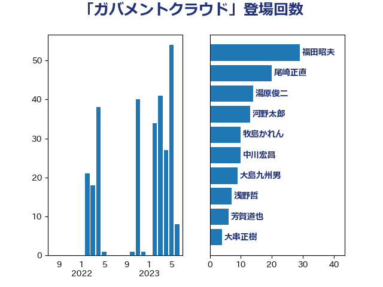

単語「ガバメントクラウド」

| 福田昭夫 | 立憲民主党 | 29 回 |
| 尾崎正直 | 自由民主党 | 20 回 |
| 湯原俊二 | 立憲民主党 | 14 回 |
| 河野太郎 | 自由民主党 | 13 回 |
| 牧島かれん | 自由民主党 | 10 回 |
| 中川宏昌 | 公明党 | 10 回 |
| 大島九州男 | れいわ新選組 | 9 回 |
| 浅野哲 | 国民民主党 | 7 回 |
| 芳賀道也 | 国民民主党 | 6 回 |
| 大串正樹 | 自由民主党 | 4 回 |
| 吉田とも代 | 日本維新の会 | 4 回 |
| 中西祐介 | 自由民主党 | 4 回 |
| 藤井比早之 | 自由民主党 | 3 回 |
| 松本剛明 | 自由民主党 | 3 回 |
| 高木かおり | 日本維新の会 | 2 回 |
| 西岡秀子 | 国民民主党 | 2 回 |
| 片山大介 | 日本維新の会 | 2 回 |
| 尾身朝子 | 自由民主党 | 2 回 |
| 小林史明 | 自由民主党 | 2 回 |
| 堤かなめ | 立憲民主党 | 2 回 |
| 金子恭之 | 自由民主党 | 1 回 |
| 福重隆浩 | 公明党 | 1 回 |
| 田畑裕明 | 自由民主党 | 1 回 |
| 本田顕子 | 自由民主党 | 1 回 |
| 末次精一 | 立憲民主党 | 1 回 |
| 平林晃 | 公明党 | 1 回 |
| 山田太郎 | 自由民主党 | 1 回 |
| 山本佐知子 | 自由民主党 | 1 回 |